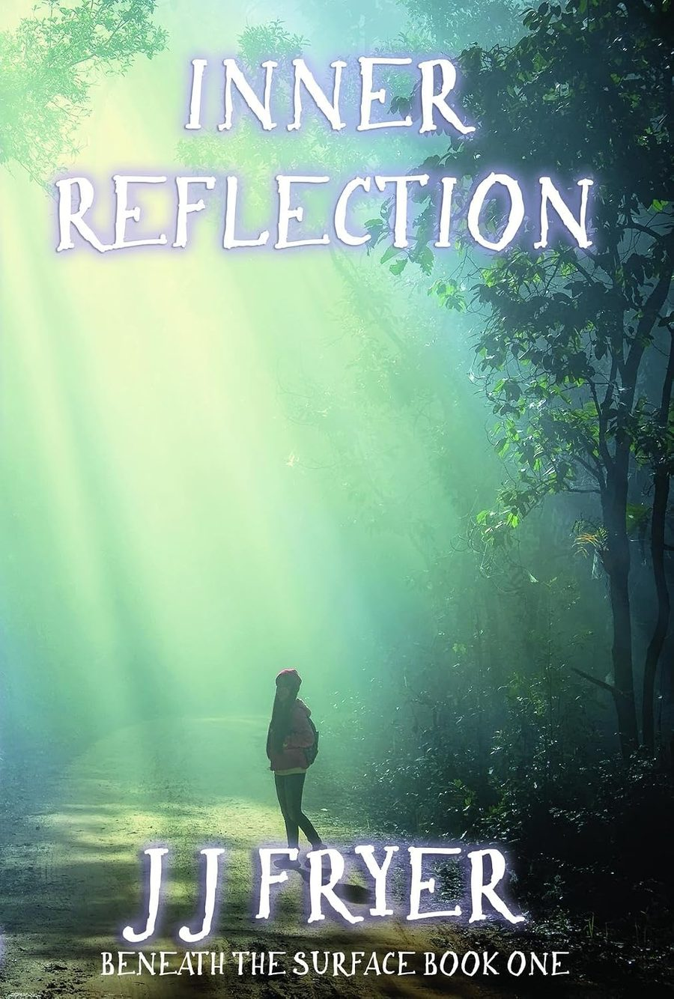
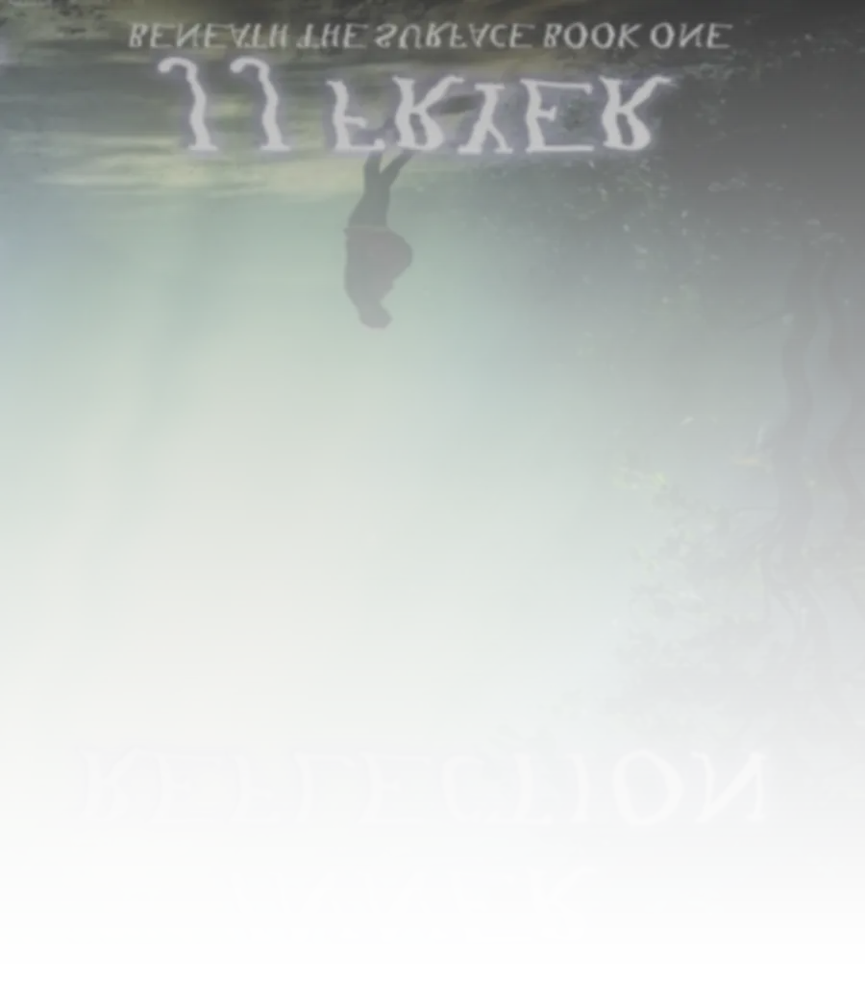
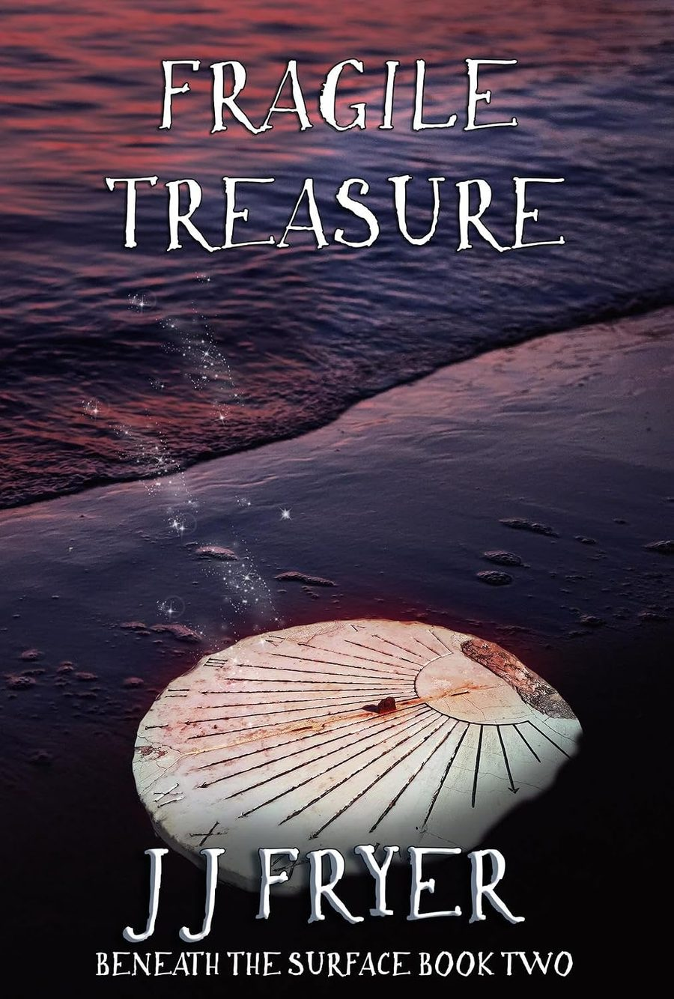
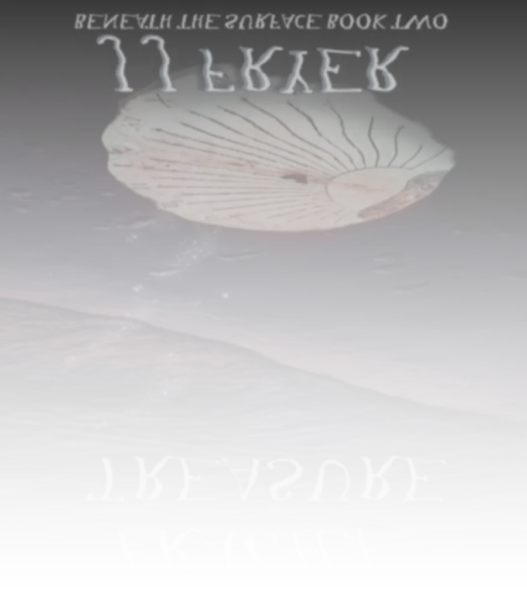
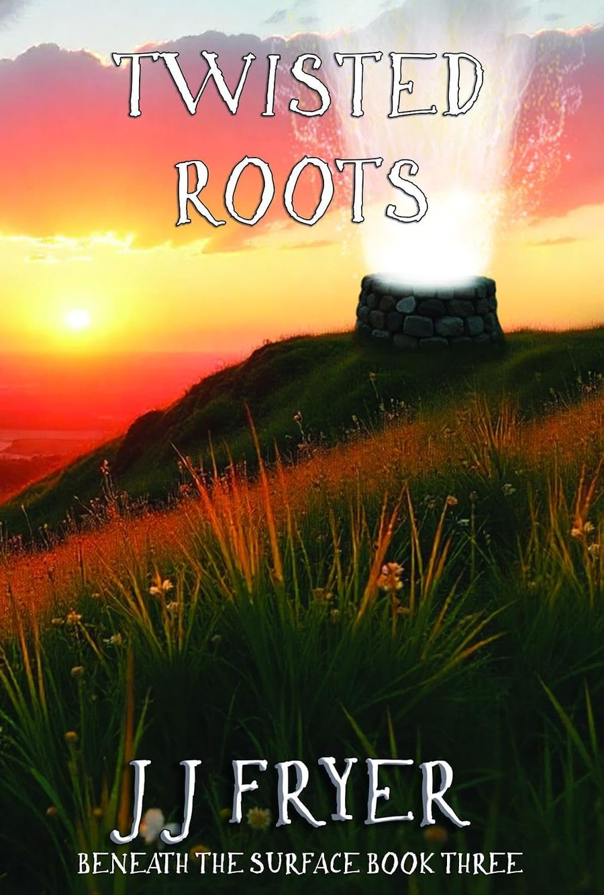
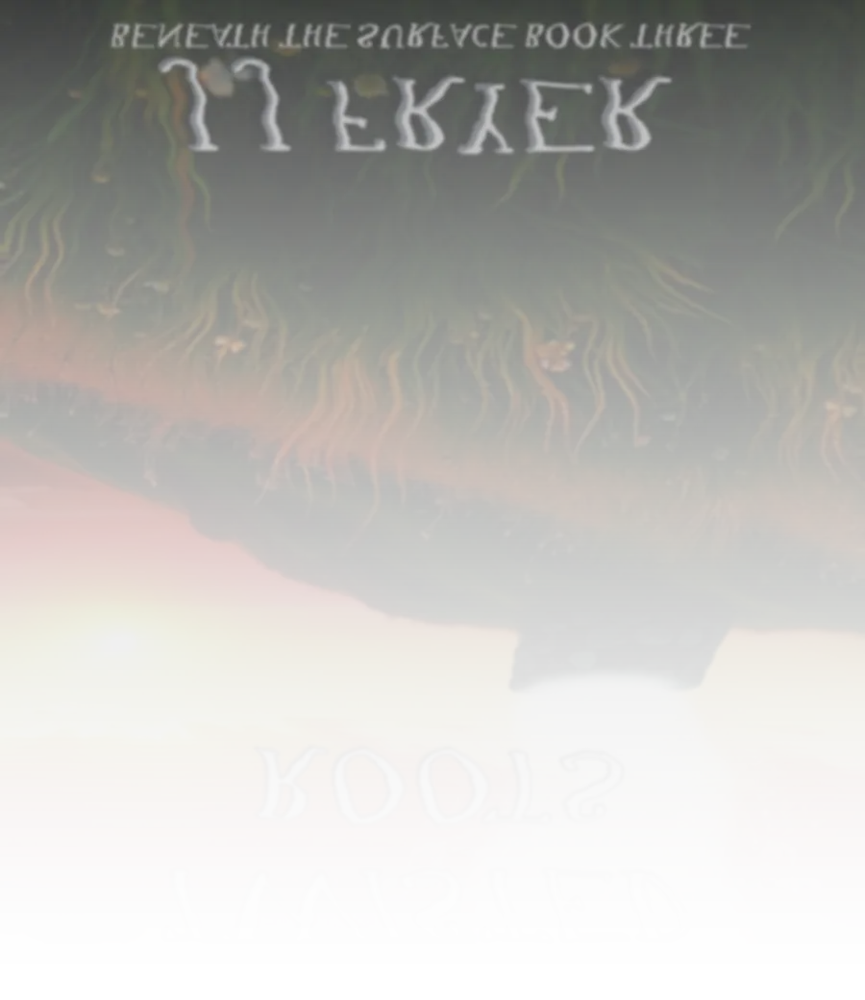

Beneath the Surface by J.J. Fryer
- Book one, Inner Reflection
However, she soon discovers that she has awoken a magical ability.
- Book two, Fragile Treasure
Mother Nature sends her and her best friend, Fletcher, on a quest through time and space.
- Book three, Twisted Roots
Can Ana, and those she trusts, find the mirror and clear her name before Ana is lost forever?
The Beneath the Surface series
Anastasia Larson starts high school and finds out she has awoken a magical ability. She and her friend, Fletcher, are thrown into a hidden world where other people with special needs have powers too. For readers 10 to 12.
-
Inner Reflection
Anastasia Larson, a young girl with Asperger's Syndrome, is about to start her first day of high school.
-
Fragile Treasure
Ana thought that after the battle in Rome things would go back to normal, well a normal that now involves her having magical powers, that is until she discovers that she has a sister that looks exactly like her.
-
Twisted Roots
Ana has been framed for a crime she didn't commit, and to top it off, Lavinia's spirit seems to have taken over her thoughts.
JJ has a strong character voice and great representation of characters with disability.
Danielle Hughes, reviewing Fragile Treasure on Goodreads
About J.J.
J.J. has a passion for all things fantasy. He writes novels he hopes will inspire people with special needs to believe in themselves.
He's an ocean lover, and an aspiring MM romantasy author.
Find him at a table
This year J.J. had tables at Book Fair Australia in Melbourne and at the Sunshine Coast Fiction Festival, where he thanked the readers who bought his books and met new ones.